Getting Started
Welcome to the Muse Configurable Options Widget (MuCow) documentation. Here you
will learn more about making your own HTML embed widgets that can be placed in
Muse and will include a set of user-facing configurable options. This format
will allow you to create content not currently available in Muse, and easily
share it with others in the community. Note that this feature allows you to
create HTML embed widgets — not "standard" widgets like Slideshows
and Accordion widgets for example.
On this site, you'll find documentation for the format itself, some examples
that will help you get started, and resources for distributing your
final MuCow and getting noticed. Hopefully this will be your one-stop-shop for
writing widgets in Muse. We'll also do our best to include recommendations for
the best ways to create, debug, and optimize your widget, as well as some good
ways to share it with the community.
The <HTMLWidget> tag is the top level tag of all MuCow files.
Example
<?xml version="1.0" encoding="UTF-8"?>
<HTMLWidget name="My Widget" formatNumber="3"
localization="none" creator="My Name"
defaultWidth="50" defaultHeight="50"
isResizable="true">
<!--
... Content Goes Here ...
-->
</HTMLWidget>
Attributes
| Name |
Values |
Description |
| name |
String |
Required. The name of the widget. Will be displayed in the options dialog, and also in the control strip |
| formatNumber |
4 (Muse 2015.1+)
3 (Muse 2014.3+)
2 (Muse 2014.0+)
1 (Muse 7.0+) |
Required. The format number of this file. Current Muse versions support format 3 and below. |
| localization |
none
stringTable |
Required. The type of localization for this widget |
| termsURL |
URL |
The URL to a 'Terms of Use' page. A link to this URL will appear in options dialog if non-empty. If you specify termsURL, do not specify termsText |
| termsText |
String |
HTML text to appear in a 'Terms of Use' dialog. Text may include links to URLs. If you specify termsText, do not specify termsURL |
| creator |
String |
Indicates the name or email address of the person or company who created this HTML widget file |
| defaultWidth |
Number |
Indicates the initial width for the HTML page item |
| defaultHeight |
Number |
Indicates the initial height for the HTML page item |
| isResizable |
Boolean |
Indicates if the page item should be user resizable. Default value is true |
| minWidth |
Number |
Indicates the minimum allowable width for the page item. |
| maxWidth |
Number |
Indicates the maximum allowable width for the page item. Setting this value means the widget can no longer be a 100% width page item. |
| minHeight |
Number |
Indicates the minimum allowable height for the page item. |
| maxHeight |
Number |
Indicates the maximum allowable height for the page item. |
| supportsGlobalAndOptionContentTags |
Boolean |
Indicates if the widget supports both global and conditional Option content tags (format 4+) |
| isResponsive |
Boolean |
Indicates if the page item should can be responsive to support fluid sizing. (format 4+) |
The <HTMLWidget> must contain at least 1 content tag and
can optionally contain a <parameters> tag, which will specify the
parameters for the widget and a <stringTable> tag for localization.
The <parameters> tag can contain any number of the parameter
tags. Check the localization section for more information
about the <stringTable> tag.
There are several parameter tags available to create the MuCow widget's On-Object UI (OOUI). This is the fly-out menu that allows the user to set certain settings about the widget.
Parameters can then be included in your code, and replaced
<text>
Specifies a parameter that will be user entered text. This text can be displayed as either a single-line or multi-line entry box in the OOUI. The maximum number of characters allowed in this field is 2048 starting with Muse 2014.0. Prior to this, the maximum was 1024.
Examples
<text name="myTextBox" defaultValue="The default value" />
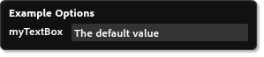
<text name="myTextBox" defaultValue="The default value"
label="A Label" toolTip="This is the toolTip"
multiline="true" />
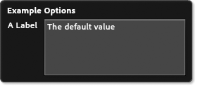
Required Attributes
| Name |
Values |
Description |
| name |
Unique String |
The name of the value. |
| defaultValue |
String |
The default value this item should have when first placed |
Optional Attributes
| Name |
Values |
Minimum Format |
Description |
| label |
String |
|
Label to display in the OOUI |
| toolTip |
String |
|
Tooltip to display in the OOUI when hovering over this option |
| paramEncoding |
URIComponent
spaceToPlus |
|
The type of encoding to apply to the entered parameter |
| multiline |
Boolean |
|
If set to true a multiline text control will be created in the UI instead of a single line text box. |
| defaultIllegalForOutput |
Boolean |
2 |
Will warn the user if the default value is used when exporting or publishing the site |
<list>
Specifies a parameter that a user can select from a set of given options. Options are given using <value> tags, which are children of the <list> tag. See Child Tags section.
Examples
<list name="myList" defaultValue="Second Value" label="My List">
<value name="first" label="First Value"/>
<value name="Second Value"/>
<value name="third_value" label="Last One" disableOptions="myTextBox,myURL"/>
</list>
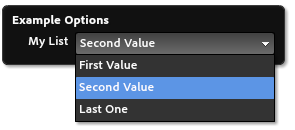
Required Attributes
| Name |
Values |
Description |
| name |
Unique String |
The name of the value. |
| defaultValue |
String |
The default value this item should have when first placed. This must match one of the name attributes of a child <value> element. |
Optional Attributes
| Name |
Values |
Description |
| label |
String |
Label to display in the OOUI |
| toolTip |
String |
Tooltip to display in the OOUI when hovering over this option |
<value>
Specifies a user-selectable value. NOTE: <value> tags can contain Content Tags which will modify the output.
Attributes
| Name |
Values |
Description |
| name |
Unique String |
REQUIRED Value that will be passed to the final code. |
| label |
String |
A label to display to the user |
| disableOptions |
List |
A comma separated list of name values for options that are disabled when the selected item is this |
<url>
Specifies the user should enter either a partial or full URL.
Examples
<url name="myURL" label="My URL"
defaultValue="http://muse.adobe.com/" />
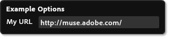
<url name="myURL" label="My URL"
defaultValue="http://muse.adobe.com/"
currentPageOrURL="true" />
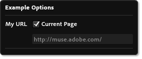
Required Attributes
| Name |
Values |
Description |
| name |
Unique String |
The name of the value. |
| defaultValue |
String |
The default value this item should have when first placed. This must match one of the name attributes of a child <value> element. |
Optional Attributes
| Name |
Values |
Minimum Format |
Description |
| label |
String |
|
Label to display in the OOUI |
| toolTip |
String |
|
Tooltip to display in the OOUI when hovering over this option |
| urlStart |
String |
|
A comma separated list of URL prefixes. all entered URLs must start with one of these, or be incomplete URLs. |
| currentPageOrURL |
Boolean |
|
If set to 'true', user will be able to enter an arbitrary URL, or choose the URL for the current Muse Page. |
| dummyDomainPrefix |
String |
|
If the user hasn't yet entered a domain name, when generating HTML for the current page, this dummy prefix will be used, along with a GUID. |
| defaultIllegalForOutput |
Boolean |
2 |
Will warn the user if the default value is used when exporting or publishing the site |
<bool>
Specifies an option that the user will be able to toggle on/off. Must include the values to use for true & false. One or both values may disable other options. Multiple bool UI elements will be arranged in columns
Examples
<bool name="toggleOption" label="Toggle Option" defaultValue="foo">
<trueVal value="foo"/>
<falseVal value="bar" disableOptions="myTextBox,myURL"/>
</bool>
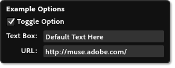

Required Attributes
| Name |
Values |
Description |
| name |
Unique String |
The name of the value. |
| defaultValue |
String |
The default value this item should have when first placed. This must match one of the name attributes of a child element. |
Optional Attributes
| Name |
Values |
Description |
| label |
String |
Label to display in the OOUI |
| toolTip |
String |
Tooltip to display in the OOUI when hovering over this option |
<trueVal>
Specifies a value to pass when user turns on this option. NOTE: <trueVal> tags can contain Content Tags which will modify the output.
Attributes
| Name |
Values |
Description |
| value |
String |
Required. Value that will be passed to the final code. |
| disableOptions |
List |
A comma separated list of name values for options that are disabled when the item is in this state. |
<falseVal>
Specifies a value to pass when user turns off this option. NOTE: <falseVal> tags can contain Content Tags which will modify the output.
Attributes
| Name |
Values |
Description |
| value |
String |
Required. Value that will be passed to the final code. |
| disableOptions |
List |
A comma separated list of name values for options that are disabled when the item is in this state. |
<number>
Specifies the user entered value should be a number
Examples
<number name="myNumber" min="1" max="100" step="1"
snap="0.1" defaultValue="1" label="Number: "/>
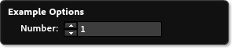
Required Attributes
| Name |
Values |
Description |
| name |
Unique String |
The name of the value. |
| defaultValue |
String |
The default value this item should have when first placed |
| min |
Number |
The minimum allowed value |
| max |
Number |
The maximum allowed value |
Optional Attributes
| Name |
Values |
Description |
| label |
String |
Label to display in the OOUI |
| toolTip |
String |
Tooltip to display in the OOUI when hovering over this option |
| step |
Number |
How large a step should be if the user clicks the up or down arrow. Defaults to 1 |
| snap |
Number |
What increment should values snap to. Defaults to 1 |
| digitsPrecision |
Number |
The number of digits to show after the decimal point |
<builtIn>
A built in is a special type that allows you to get values that are specified directly in Adobe Muse. These values are passed in the same as any other parameters, and the name can be any one of the values listed below.
Attributes
| Name |
Values |
Description |
| name |
Type |
Required. One of the types listed below |
| supportedLocales |
List |
When the name attribute is "locale", this attribute is a comma separated list of locales supported by this MuCow. If the document locale is not one of these, the en_US will be used |
| supportedLanguages |
List |
When the name attribute is "language", this attribute is a comma separated list of languages supported by this MuCow. If the document language is not one of these languages, the English equivalent will be used instead |
NOTE: The supportedLocale and supportedLangauge attributes are ignored if the name attribute is not locale or language respectively.
Types
-
width
-
Page item width in Muse
-
height
-
Page item height in Muse
-
itemUID
-
The unique ID that is designated to this page item
-
siteUID
-
The unique ID that identifies this Muse site
-
country
-
Country code for the current Muse document (e.g. US, FR, JP)
-
language
-
Character code for the language of the current Muse document (e.g. en, fr, es)
-
locale
-
Language and country code for the current Muse document (e.g. en_US, fr_FR, es_ES)
-
siteDomain
-
v4 and later, the domain in which the site is published to (e.g. muse.adobe.com)
-
siteURL
-
v4 and later, the url to the site (e.g. http://muse.adobe.com)
-
pageTitle
-
v4 and later, the title of the page (e.g. "home")
-
pageURL
-
v4 and later, the url to the page (e.g. http://muse.adobe.com/index.html) similar to the
currentPageOrURL attribute for the <URL> parameter
<info>
Informative text to show in the On-Object UI, which can optionally link to a URL. Only supported by widgets format 2 or above.
Examples
<info label="You can place informative text here."/>
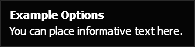
<info label="Click Here!" linkURL="http://muse.adobe.com"/>
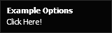
Required Attributes
| Name |
Values |
Description |
| label |
String |
The text to display to the user |
Optional Attributes
| Name |
Values |
Description |
| linkURL |
URL |
The URL to take the user to if the text is clicked |
<separator>
A line used to separate parameters in the On-Object UI. Only supported by widgets format 2 or above.
Examples
<text name="name" label="Name:" defaultValue="You" />
<separator/>
<info label="Here's some more content"/>
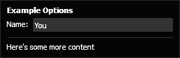
<file>
Specifies a parameter that will be a user chosen file. This file will be added as a file for upload. Only supported by widgets format 3 or above.
Examples
<file name="img1" label="Choose an Image:" filterLabel="Images" fileTypes="*.jpg;*.jpeg;*.png;*.gif" fileRequiredForOutput="true"/>
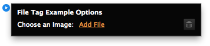
Required Attributes
| Name |
Values |
Description |
| name |
String |
The name of the value |
Optional Attributes
| Name |
Values |
Description |
| label |
String |
Label to display in the OOUI |
| toolTip |
String |
Tooltip to display in the OOUI when hovering over this option |
| filterLabel |
String |
Label for filter in the file browse dialog |
| fileTypes |
String |
File types allowed in the file browse dialog. Should be a semicolon-separated list in format "*.ext;*.ext2" |
| fileRequiredForOutput |
Boolean |
Will warn the user when exporting or publishing the site if no file was chosen. Defaults to false. |
| asAbsoluteURL |
Boolean |
v4 The result is computed as an absolute (http) URL based on publish settings. |
Starting in v4 of the MuCow format, the <file> parameter can resolve with an absolute url to the file if the asAbsoluteURL attribute is true.
Special care must be taken when the user chooses their publication settings when Muse is not publishing the site on their behalf (i.e. when generating
the site to disk.) Muse uses the values entered in these options to build a canonical URL to the file specified.
<color>
Specifies a parameter that will be user chosen color. Presented to the user as a color picker in the UI. Only supported by widgets format 3 or above.
Examples
<color name="textColor" label="Text Color" defaultValue="#C74040"/>
<color name="backgroundColor" label="Background Color" rgbColor="true" defaultValue="0, 0, 255"/>
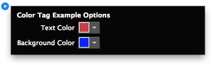
Required Attributes
| Name |
Values |
Description |
| name |
String |
The name of the value |
| defaultValue |
String |
Can be either hex color or comma separated RGB value. Does not affect output format. Use rgbColor to output comma separated RGB value. |
Optional Attributes
| Name |
Values |
Description |
| label |
String |
Label to display in the OOUI |
| toolTip |
String |
Tooltip to display in the OOUI when hovering over this option |
| rgbColor |
Boolean |
Color value to be returned as comma separated RGB value. Defaults to false. |
| formatHexColor |
Boolean |
Adds the # character before the hex value. Use when color is used in CSS. Defaults to false. |
| supportsNoneColor |
Boolean |
Allow user to pick the none color swatch. Choosing none will output the word transparent. Defaults to false. |
| transparentOption |
String |
The name of a <number> input parameter to use to control transparency. This Allows the color picker to include a slider to adjust the alpha channel of the color. The named input can later be referenced by the generated code as content to pass as the alpha parameter to rgba(). When specifying a transparentOption, supportsNoneColor must also be set to true . |
<section>
Section is a special parameter tag which allows for related parameters to be grouped together. The user experience for section tags is a collapsable group with a disclosure arrow.
<section> tags should have at least 1 of the child parameter tags listed above but it may not contain any other <section> tags.
Required Attributes
| Name |
Values |
Description |
| label |
String |
Label to display in the OOUI |
Optional Attributes
| Name |
Values |
Description |
| expanded |
Boolean |
Specifies if the section is initially expanded when the OOUI is displayed for the widget. Defaults to false. |
| name |
Unique String |
The name of the section. This name can be used to reference the section from a "disableOptions" attribute of another parameter |
<bool name="toggleOption" label="Use Background Image" defaultValue="noImage">
<trueVal value="yesImage"/>
<falseVal value="noImage" disableOptions="imageSection" />
</bool>
<section label="image" expanded="true" name="imageSection" >
<file fileTypes="*.png;*.jpg;*.jpeg;*.gif" filterLabel="Image Files" label="Image" name="Image" fileRequiedForOutput="true" tooltip="Image"/>
</section>
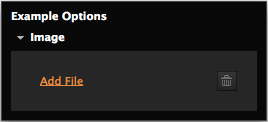
Content Tags
Content tags are the meat and potatoes of your MuCow. They are what
actually place things into Muse output. Each of these areas can be
used to add content to the resulting output HTML.
Content tags can be global, as the only content generated, or as optional
content written as a condition of a Boolean or List option value.
HTML Content
Because MuCows are written in XML, you will need to use <![CDATA[]]>
to wrap any HTML content you are inserting into the page. For example,
if you want to place an image in the <pageItemHTML> tag, you'll
need to do the following:
<pageItemHTML>
<![CDATA[
<img src="http://example.com/logo.jpg" alt="My Logo">
]]>
</pageItemHTML>
Note that for any HTML elements, you can use the HTML class actAsDiv
to indicate that you want that element to be a block level element.
This is especially useful with things like <img> or <iframe>
content which is not block by default.
Parameters
Parameters are indicated by using {param_PARAMNAME}. They will be
replaced at runtime with the current value of that parameter option.
<documentReadyJS>
Javascript in this field will be added to the page's document ready
handler. Any content added to this field is wrapped in its own function
to avoid co-mingling with other script content.
<headHTML>
HTML in this field will be added to the page <head> at output time.
Only one copy of the code will be output, even if there are multiple
instances of this widget on a page.
<bodyBeginHTML>
HTML in this field will be added right after the <body> open. Only one
copy of the code will be output, even if there are multiple instances
of this widget on a page.
<pageItemHTML>
HTML in this field will be added where the page item is positioned on the
page.
<bodyEndHTML>
HTML in this field will be added right before the close of the </body>
element. Only one copy of the code will be output, even if there are
multiple instances of this widget on a page. Note that jQuery is loaded
prior to this code, so jQuery can be used by any scripts in this area.
<pageItemPosterHTML>
HTML in this field will be used while generating the in-app preview of the
widget. This is especially useful for items that will not load due to
restrictions on URLs that can load the content, or on items which have a
bandwidth limit. This will only be available in MuCows that use format
version 2 or above.
Global vs. Conditional content
The <trueVal>, <falseVal>, and <value> tags (children of <bool> and
<list> tags) can have child content tags. Content tags on this level are
generated based on the condition of the value selected at runtime and are
in contrast to global content tags which are always generated regardless of
what list item was selected or if a checkbox was checked.
Widget authors needed to be careful of using conditionals because MuCows can
have either conditional content or global content and each condition will
write code that essentially trumps other conditions. Mixing conditional value
requires some sort of javascript or web-service to build the html when there
is more than one conditional value in a widget.
Starting with format version 4, however, conditional content can be "built-up".
This means that conditions can generate the code specific for that option
without the need to worry about the code for one condition stepping on the
code generated from another condition.
Also starting with version 4: conditional content is no longer exclusive to
the output -- meaning that you can have have global content that includes
conditional content.
To enable this feature, you'll need to add the following to your
HTMLWidget tag:
supportsGlobalAndOptionContentTags="true"
which will enable you to write code that resembles the following:
<parameters>
<bool name="incEMail" defaultValue="true">
<trueVal value="true">
<pageItemHTML>
<![CDATA[<p><a href="mailto:info@adobe.com">info@adobe.com</a></p>]]>
</pageItemHTML>
</trueVal>
<falseVal value="false"/>
</bool>
<bool name="incCoAddr" defaultValue="true">
<trueVal value="true">
<pageItemHTML>
<![CDATA[<p>345 Park Ave<br/>San Jose, CA 95110</p>]]>
</pageItemHTML>
</trueVal>
<falseVal value="false"/>
</bool>
</parameters>
<pageItemHTML>
<![CDATA[<p>Contact Us:<br/>1-800-866-8006</p>]]>
</pageItemHTML>
This allows for each conditional item to generate a snippet of HTML for output
without the need to write complex javascript tests to modify the document at runtime.
Also new with version 4 is the conditional tags now support all 4 content tags.
Version 3 and below only supported "pageItemHTML" content to be generated from
conditional elements. Version 4 will support "pageItemHTML", "bodyBeginHTML",
"bodyEndHTML" and "headHTML" content tags.
<parameters>
<bool name="addAutoComplete" defaultValue="true">
<trueVal value="true">
<headHTML>
<![CDATA[<script src="http://code.jquery.com/ui/1.11.4/jquery-ui.js"></script>
<script>
$(function() {
var tags = [
"Adobe",
"Microsoft",
"Apple",
"Oracle"
];
// add autocomplete to every text input field
$("input[type='text']").autocomplete({
source: tags
});
});
</script>
]]>
</headHTML>
</trueVal>
<falseVal value="false"/>
</bool>
</parameters>
Also starting with V4, only one of the <bool> tags are required to have content tags.
Previous versions would require both <trueVal> and <falseVal> to have a <pageItem>
tag if one of them had it but this is no longer the case. An empty content tag is
automatically created for you if you omit one of them.
Localization
The localization tags enable you to localize your widget based on the
language of Muse. You can use this to make it easier for others users
who use Muse in different languages to customize the MuCow.
<stringTable>
This is the primary method at the moment for enabling translation of
your widget to other languages. For this element to have any effect,
you'll need to make sure to set the localization attribute to
stringTable.
A <stringTable> must contain at least 1 <locale> tag, but can
contain as many as needed.
Examples
<stringTable>
<locale name="en_US">
<string keyString="kBlinkWidget" translation="Blinking Text"/>
<string keyString="kUserText" translation="Text:"/>
</locale>
<locale name="fr_FR">
<string keyString="kBlinkWidget" translation="Texte Clignotant"/>
<string keyString="kUserText" translation="Texte :"/>
</locale>
</stringTable>
<locale>
This is a locale that you have translated your properties to. These
should match one of the language codes available in Muse.
A <locale> tag should contain a <string> tag as a child for each
translated string value to be used in the widget.
Required Attributes
| Name |
Values |
Description |
| name |
Any Muse Locale |
The locale that these <string> tags are for |
Examples
English (US)
<locale name="en_US">
French
<locale name="fr_FR">
Japanese
<local name="jp_JP">
<string>
A string is the actual translated content that Muse will show in to
the end user. It will contain a keyString and a translation
attribute. The keyString attribute will be the same across the
locales, and is what you will put in the place of the real string.
See the examples section for more information.
Required Attributes
| Name |
Values |
Description |
| keyString |
String |
The key that will be swapped out when translating the strings |
| translation |
String |
The translated string for this locale |
Examples
<parameters>
<text name="userText" label="kUserText" defaultValue="Hello World!"/>
</parameters>
<stringTable>
<locale name="en_US">
<string keyString="kUserText" translation="Text:"/>
</locale>
<locale name="fr_FR">
<string keyString="kUserText" translation="Texte:"/>
</locale>
</stringTable>
Tutorials
In this section, you'll find tutorials related to accomplishing common
tasks you're likely to do with a MuCow. These will hopefully give you
an idea of how to accomplish what you need, and, as always, feel free
to ask any questions in the forums.
Using jQuery
jQuery is a very common thing for people to want to use, and we
will automatically load in jQuery when a Muse page loads. You should
not load your own version of jQuery. This will increase load times,
and cause issues with Muse exported code. Instead, if you include your
JavaScript in the <bodyEndHTML> you will be able to use the
version of jQuery we load.
Combining this with things like the built-in ID parameter allows
you to directly manipulate the page item you'd like using standard
jQuery functionality. For example, if I wanted to increment a counter
every time the user clicked on the page item, it might look something
like this.
<?xml version="1.0" encoding="UTF-8"?>
<HTMLWidget name="Example" formatNumber="1" localization="none" creator="Adobe Muse Team">
<parameters>
<builtIn name="itemUID"/>
</parameters>
<pageItemHTML>
<![CDATA[
You've clicked on this item <span class="count">0</span> times.
]]>
</pageItemHTML>
<bodyEndHTML>
<![CDATA[
<script type="text/javascript">
$("#{param_itemUID}").data('clickCount', 0).on('click', function () {
$(this).data('clickCount', $(this).data('clickCount') + 1);
$(this).find('.count').text($(this).data('clickCount'));
});
</script>
]]>
</bodyEndHTML>
</HTMLWidget>
FAQ
Here are some common questions people have. If you don't see your question
here, feel free to ask it in the forums and others can help you out.
What is a MuCow?
A MuCow is an Adobe Muse Configurable Options Widget. It is a extension format
that allows you, the user, to write your very own widgets for Muse. With this
widget, you can include a set of user configurable options that enable you to
change your behavior based on parameters to your script. A MuCow itself is
written in a simple XML format, and saved as a .mucow file format.
Can I use jQuery?
Yes. You can use the version of jQuery we use by placing all script content
in <bodyEndHTML> tag. You can also check out our jQuery Tutorial.
How can I make one?
Simply open up your favorite text or XML editor, and follow the documentation
here. Once you're done, save it as a .mucow file, and place it into Muse.
How do I place it?
Adding a MuCow into Muse is done in the same manner in which an image, Flash,
or Edge Animate file are added. Simply use the "File > Place" menu item, or
the keyboard shortcut CTRL/CMD + D.
What versions support it?
Different Muse versions support different MuCow formats starting with the 7.0
Muse release. See the following table for more information about which releases
support which MuCow formats
| MuCow Format |
Minimum Muse Version Required |
| 1 |
7.0 (Released Nov. 2013) |
| 2 |
2014.0 (Released June 2014) |
| 3 |
2014.3 (Released February 2015) |
| 4 |
2015.1 (Released February 2016) |
Where can I share it?
The recommended way to share your MuCow with others is by adding it to a
library, exporting the library, and submitting it to the Adobe Add-on
marketplace. You may also submit the .mucow file if you'd like it to be
used as an example by others who want to create their own. If you do choose to
include both, simply place the files into a .zip folder, and upload that
instead. To learn more about creating user library items please refer to
the help page for the library panel. To learn more about submitting
content to the Adobe Add-on marketplace refer to the Add-on help page.
Examples
Interactive
The following examples are available in annotated-source format:
All Examples
The Muse team has created various .mucow examples, which can be downloaded in .zip format here: All Mucow Examples.